No.1
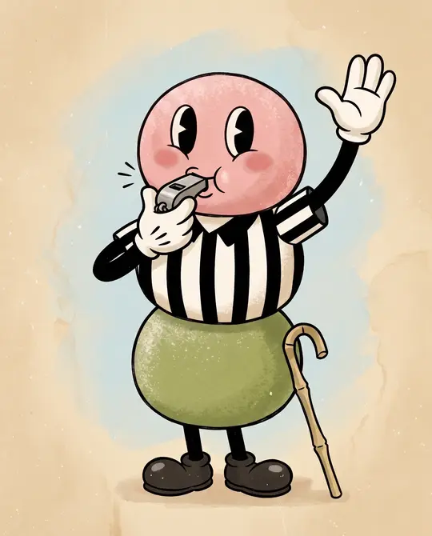
The Referee
the safety switch
Watches every strategy like a referee. The moment one stops working, it blows the whistle and benches it — before it can lose much.
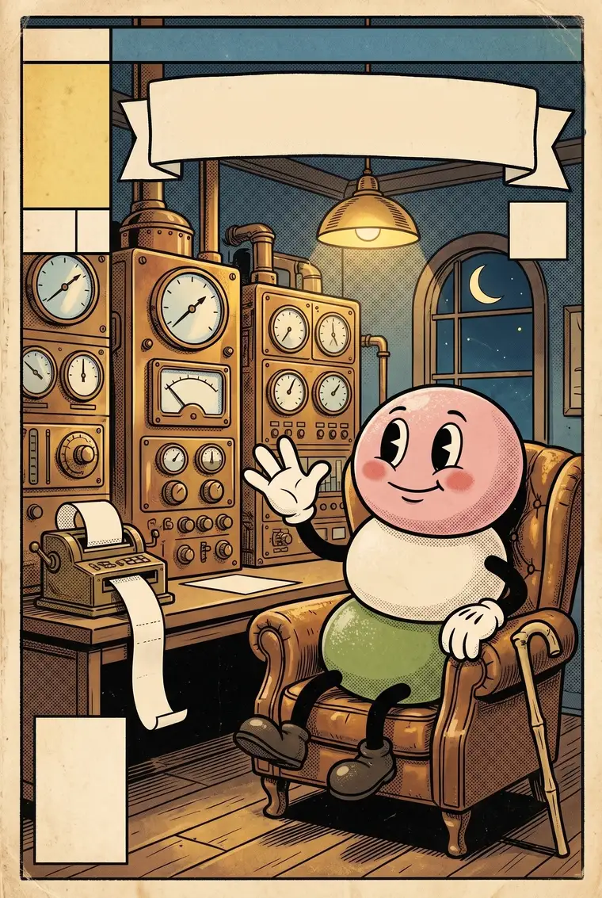
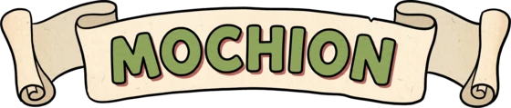
— MOH-CHEE-ON · ISSUE #0 —
Meet Mochi — a little worker who keeps a trading machine running, day and night, behind glass. It trades crypto on its own and shows its work: every move, every win, every ugly loss, out in the open. The bet is simple — trust should be earned with proof, not bought with a pitch.
The machine is running.
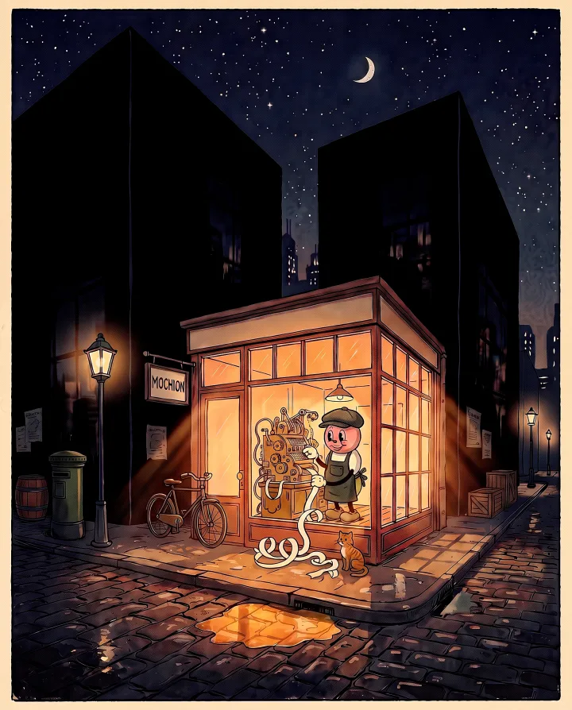
An all-night workshop with one worker in it. Mochi keeps a little machine running — it trades crypto, carefully, on its own on Bybit and Hyperliquid, and every move it makes gets written down. No hype, no promises. Just a worker, a machine, and a job done in the open.
Soft on the outside. Strict on the inside.
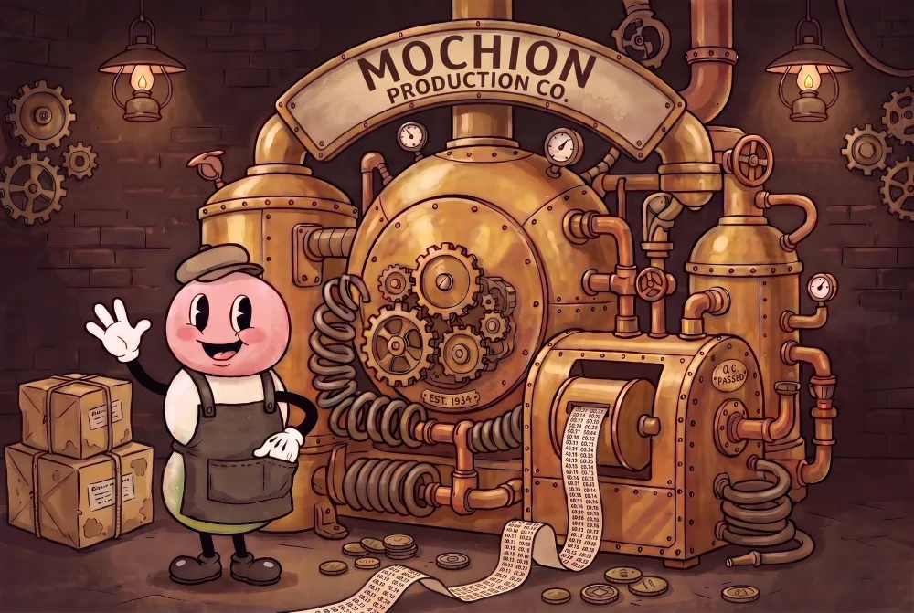
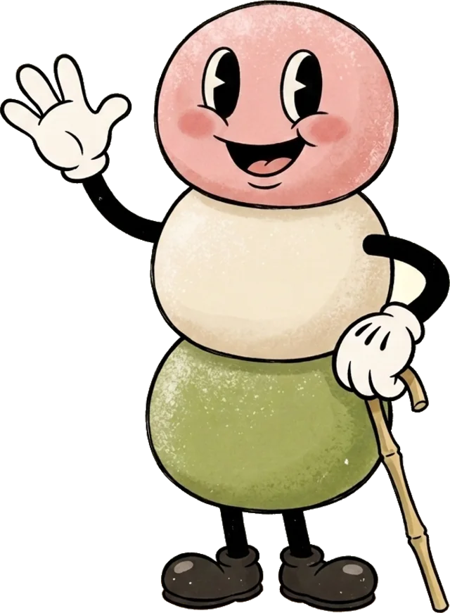
Mochi's crew · four little jobs, one little machine

Watches every strategy like a referee. The moment one stops working, it blows the whistle and benches it — before it can lose much.
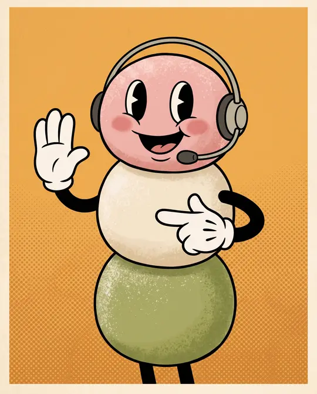
Runs the front desk. Takes each order, double-checks it, sends it to the exchange, and makes sure what really happened matches the plan.
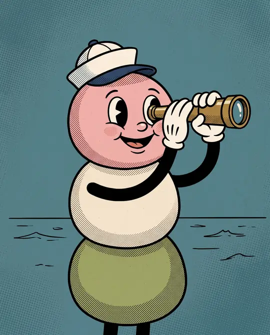
Keeps watch over the charts. The moment a signal fires, it catches it and hands it straight to the Dispatcher — nothing gets in without being seen first.
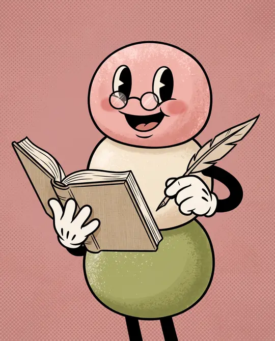
Studies the past all day to learn what actually worked — before anything trades live. The careful one that keeps everyone else honest.
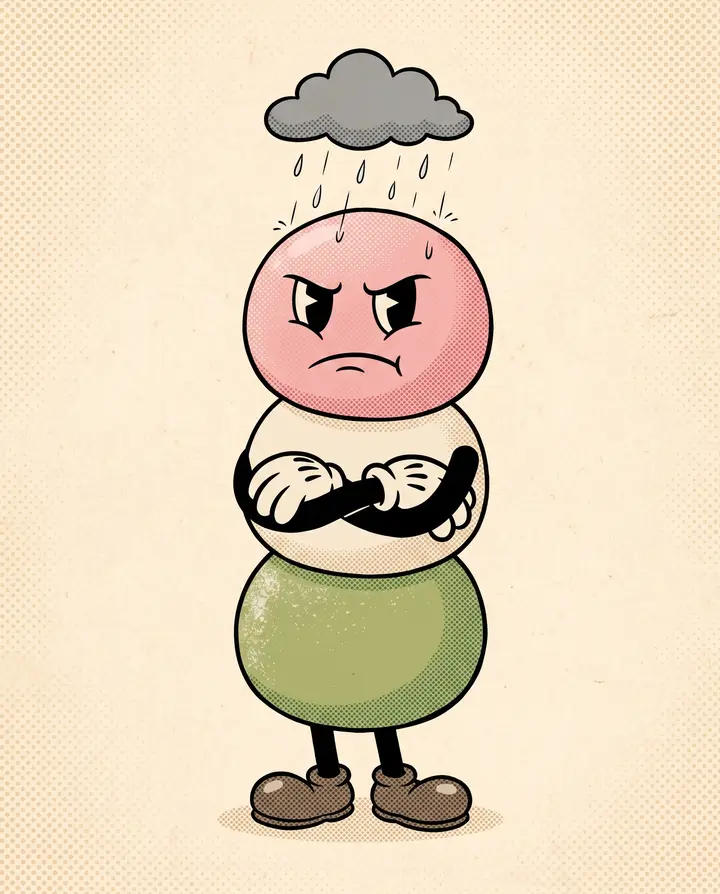
Most trading pages only show the wins. This one owns up to the mistakes too — the bugs, the things that broke, the ideas that stopped working. Honest is more interesting than perfect.
The mess-ups get written up in the build log.
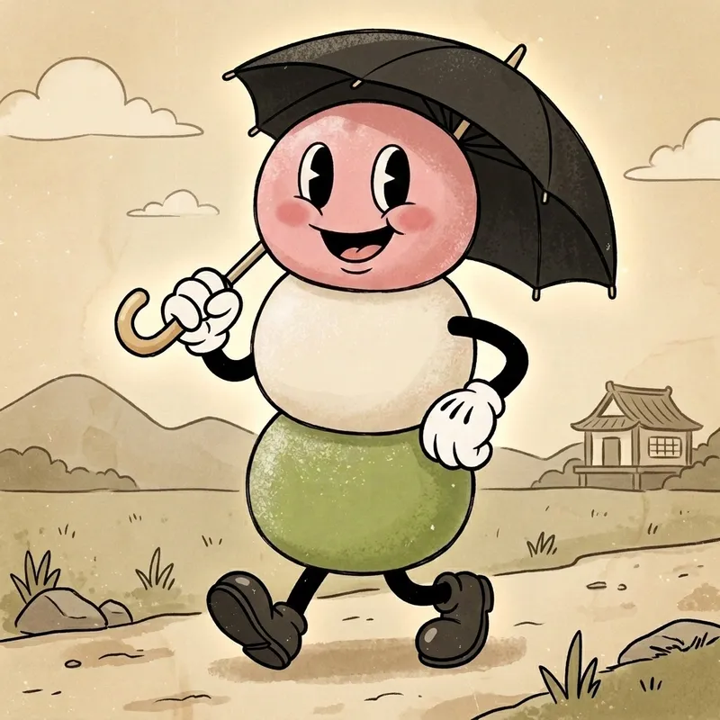
Mochion is built to be careful, not lucky. It keeps its bets small, drops what isn't working fast, and double-checks its own moves. The goal is to survive the bad weather — not to promise sunshine.
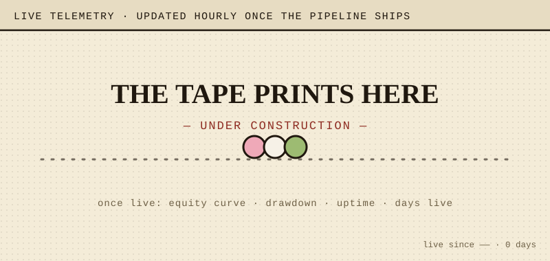
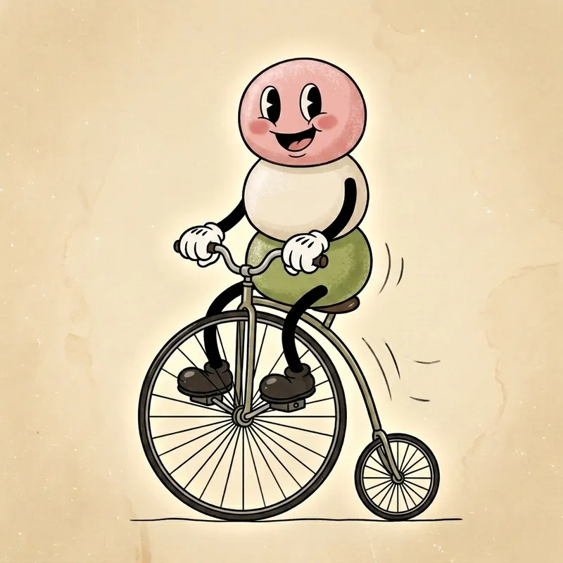
A track record takes time, and HQ is only just getting its lights on. Mochion grows in the open — build notes, real numbers, and the honest story of a little machine earning its keep, with the builders who show up along the way. Where it's headed next is on the roadmap.
Follow along and watch Mochi and his machine try to earn your trust — the honest way.
{kind=link}